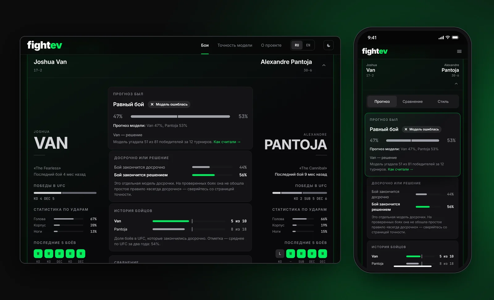

№ 01
fightevреальный продуктreal product
Прогноз ML-модели на каждый бой турнира UFC и честная история её ошибок. An ML forecast for every fight on a UFC card and an honest record of its misses.
- ЗадачаProblemПрогнозов на бои много, но непонятно, каким верить: свои ошибки их авторы не показывают.Fight predictions are everywhere, but it’s hard to know which to trust: their authors don’t show their misses.
- РешениеSolutionРазбор каждого боя и отдельная страница точности: модель сравнивается с рынком, промахи на виду.A breakdown for every fight and a separate accuracy page: the model is compared to the market, misses stay visible.
- ИтогResultТест на 5 людях: не меньше 4 из 5 с первого экрана поняли, о чём сайт, и нашли, где проверить прогноз.Tested with 5 people: at least 4 of 5 got what the site is from the first screen and found where to check a forecast.
- РольRoleПродукт, дизайн, фронтенд, данные — в команде одинProduct, design, front end, data — a team of one